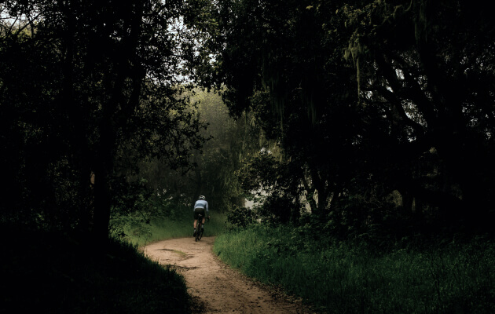
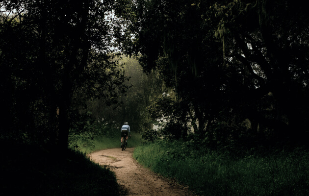
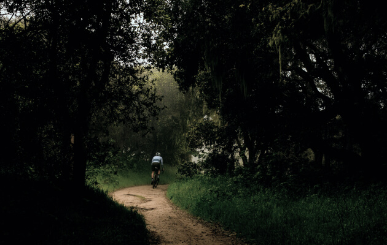

Шоссе
На шоссейном велосипеде можно ездить по асфальту на разных градиентах: будь то горы или равнины. Гонки проходят в командном пелотоне, но тренироваться можно и самостоятельно.
 

Триатлонные старты, горные серпантины или грейвел заезды по живописным маршрутам - нужно только определиться с выбором велосипеда и отправиться в путь.
ПодробнееCannondale Systemsix

«Катайся много или мало, долго или коротко, как хочешь - но катайся»
На шоссейном велосипеде можно ездить по асфальту на разных градиентах: будь то горы или равнины. Гонки проходят в командном пелотоне, но тренироваться можно и самостоятельно.
